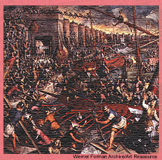

|
On April 6, 1453, the siege of Constantinople began, and the Christian inhabitants of the city grimly set about organizing a lengthy defense. But by the end of the month, in a bold and brilliant maneuver, Sultan Muhammad's forces had threatened the city's north wall and neutralized the Roman fleet within its harbor. |
|
DAY 1: Friday, April 6 (Constantinople) Today, the 80,000 troops of Ottoman Sultan Muhammad took their positions before Constantinople's famed triple walls. The Ottoman lines stretch along the 4 miles from the Golden Gate at the southern end to the Xyloporta Gate at the north end. The sultan's forces are also encamped on the other side of the harbor formed by the Golden Horn, an inlet of the Bosporus, which forms the north boundary of the city. The sultan's red-and-gold tent, pitched about a quarter mile away, is clearly visible from the city's walls. Constantinople's 50,000 residents take comfort in the city's mighty defenses. The northern shore of the city is protected by a boom at the mouth of the Golden Horn. The city's eastern point is swept by swift currents. Its southern shore is guarded by rocks and shoals. So the 5,000 Roman defenders, led by Emperor Constantine XI, and their 2,000 foreign allies under General Giovanni Giustiniani from the Italian city of Genoa, believe they can concentrate their forces at the middle wall at the west side of the city. DAY 12: Tuesday, April 17 (Ottoman camp) The Ottoman fleet is in place, blockading the city. Also in place are the Ottomans' massive cannons, the first guns large enough to damage solid stone walls. After almost a week of cannon bombardment, a central section of the outer breastwork west of the city has been destroyed and the outer wall inside it has been heavily damaged. However, Ottoman gunners have found that the recoil of their huge cannons, which fire 1,000-pound cannonballs, severely damages the cannon platforms. As a result, the gunners can fire the sultan's largest cannons only seven times a day. This slow rate of firing has forced the Ottomans to concentrate their fire on a narrow section of the outer wall. This has enabled the Christians to mass their few defenders here, knowing that most other sections of the wall can withstand even large-scale assault by Ottoman troops. DAY 13: Wednesday, April 18 (Ottoman Camp) The Sultan's first assault on Constantinople has been beaten off. Today, after sunset, Ottoman troops attacked. After easily penetrating the smashed outer breastwork, they ran into difficulty. The city's defenders had repaired their damaged outer wall by building a wooden stockade reinforced with barrels filled with dirt. Because the outer wall and stockade stand on a 10-foot embankment, the attackers were forced to climb the embankment in order to reach the stockade. Not surprisingly, the attackers were able to penetrate the stockade in only a few places. The small number of troops who made it through were quickly cut down by vigorous defenders wearing better armor. After four hours, the sultan recalled his soldiers. According to the sultan's press office, about 200 Ottoman soldiers died in this attack. It appears that no Christians were killed. DAY 15: Friday, April 20 (Ottoman Camp)  Sultan Muhammad watched the battle with great excitement. When his forces lost, he grew furious. Sources close to the sultan report that he will likely punish his admiral severely for this humiliating and very public defeat. DAY 17: Sunday, April 22 (Ottoman Camp) An Ottoman fleet has entered the Golden Horn-not by water, but over land. For weeks, the Ottomans had been quietly building a wooden road from the Bosporus to the head of the Golden Horn, an inlet of the Bosporus that flows into Constantinople. The Ottomans also constructed wheeled cradles. This morning, they lowered the cradles into the water, tied the ships onto them, and dragged the vessels ashore. Teams of oxen hauled the ships over the ridge that separates the two bodies of water. As the ships traveled overland, crews stroked their oars and raised their sails, as if they were at sea. Flags flew, drums sounded, and fifes and trumpets played. Before noon, the Ottomans had transferred some 70 ships into the Golden Horn, where they can threaten the city's north walls. Another 70 ships remain outside the harbor to maintain the blockade.
|